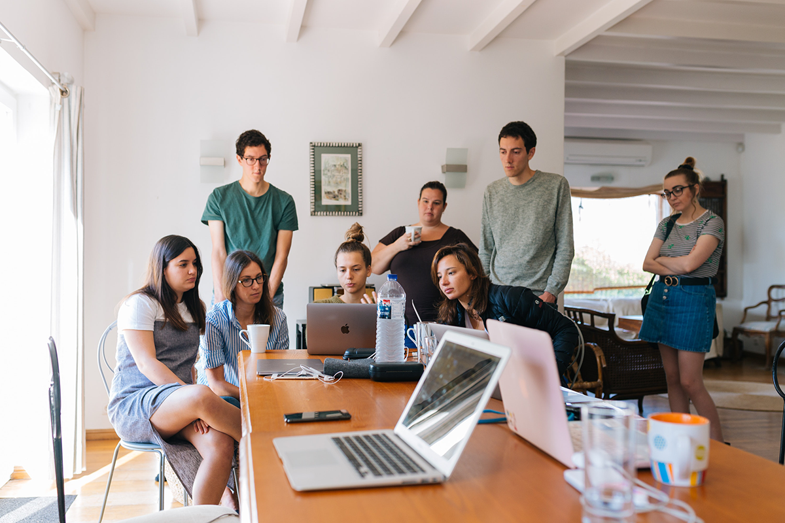

At Baby Carriages, our team is a blend of experienced veterans and young talents from diverse backgrounds, all dedicated to bringing the best products for you and your little ones. With their exceptional skills and fresh perspectives, we ensure that every product meets the highest standards of safety, innovation, and design.
Leadership Team
Emma Watson - CEO
Timothée Chalamet - Head of Design
Park Shin-hye - Head of Engineering
Design Team
Lily Collins - Lead Designer
Noah Centineo - Senior Designer
Araya A. Hargate - Product Stylist
Kim Soo-hyun - Graphic Designer
Engineering Team
Yara Shahidi - Lead Engineer
Tom Holland - Senior Engineer
Storm Reid - Manufacturing Specialist
Lee Min-ho - Quality Control Engineer
Marketing Team
Hailee Steinfeld - Marketing Manager
Joey King - Digital Marketing Specialist
Pimchanok Luevisadpaibul - Social Media Coordinator
Yoo Ah-in - Branding Specialist
Who We Are
At Baby Carriages, our team is a blend of experienced veterans and young talents from diverse backgrounds, all dedicated to bringing the best products for you and your little ones. With their exceptional skills and fresh perspectives, we ensure that every product meets the highest standards of safety, innovation, and design.
Executives/Leadership Team

Marketing Team
Our Story
Founded in 1995, Baby Carriages has been a pioneer in redefining the standards of baby transportation. Our team of experienced designers and engineers works tirelessly to incorporate the latest technology and ergonomic features into our products, ensuring that they not only meet but exceed industry standards.